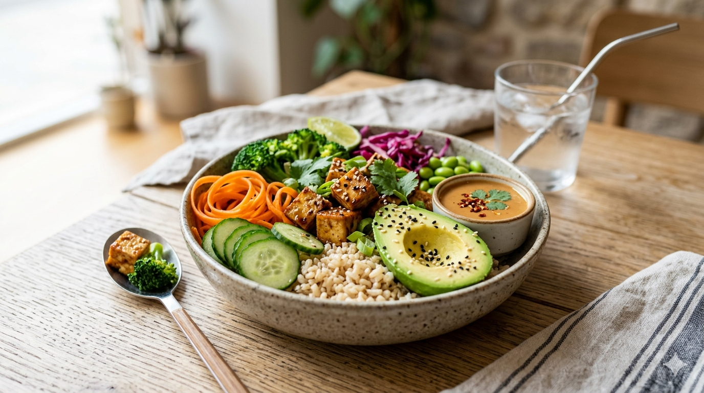

The Bowl nace en Palermo como una propuesta que busca acercar la cocina asiática a un estilo de vida actual: más consciente, dinámico y conectado con lo natural. Inspirado en los sabores de la cocina taiwanesa y la cultura del street food, el proyecto propone una forma de comer simple, donde cada plato combina ingredientes frescos, técnicas tradicionales y una mirada moderna.
Somos un espacio de comida vegetariana que pone el foco en la calidad, la frescura y la personalización. A través de bowls, ramen y distintas combinaciones, invitamos a descubrir una experiencia gastronómica donde lo vegetal es protagonista, sin resignar intensidad ni sabor.
En The Bowl creemos en una forma de comer que se adapta al ritmo urbano, pero que al mismo tiempo invita a disfrutar, explorar y reconectar con lo que elegimos en cada plato.

Cocina asiática vegetariana
Bowls, ramen y platos inspirados en sabores taiwaneses, con ingredientes frescos y combinaciones pensadas para una experiencia simple, rápida y llena de sabor.
Fresco, urbano y personalizado
Una forma de comer que se adapta a tu ritmo: elegí, combiná y disfrutá de una propuesta moderna, consciente y hecha en el momento.
Pedí o reservá fácilmente
Hacé tu pedido online o reservá tu mesa en pocos pasos y viví la experiencia The Bowl, donde quieras.